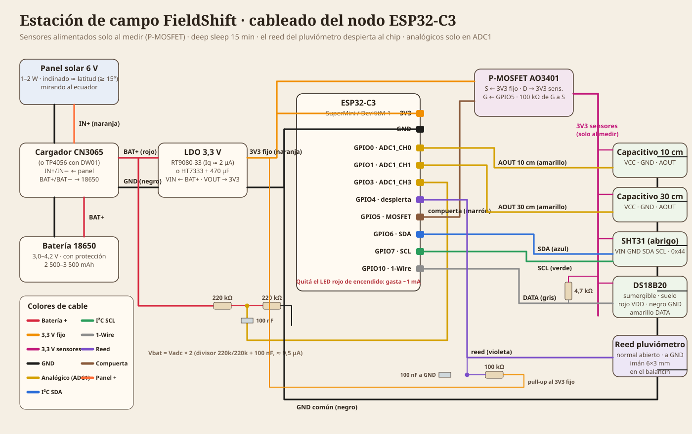

FieldShift · hardware
Estación de campo: humedad del suelo y lluvia
ESP32-C3 · 2 sensores capacitivos (10 y 30 cm) · DS18B20 · SHT31 en abrigo de platos · pluviómetro de balancín impreso · 18650 + panel solar 6 V

Pines por placa
| Función | ESP32-C3 | ESP32-S3 | ESP32 (D) |
|---|---|---|---|
| Humedad 10 cm (ADC1) | GPIO0 | GPIO1 | GPIO32 |
| Humedad 30 cm (ADC1) | GPIO1 | GPIO2 | GPIO33 |
| Batería (ADC1, divisor ×2) | GPIO3 | GPIO4 | GPIO35 |
| Reed pluviómetro (despierta) | GPIO4 | GPIO5 | GPIO34 |
| Compuerta P-MOSFET | GPIO5 | GPIO6 | GPIO25 |
| I²C SDA / SCL | GPIO6 / 7 | GPIO8 / 9 | GPIO21 / 22 |
| 1-Wire DS18B20 | GPIO10 | GPIO7 | GPIO4 |
- ADC2 no sirve con WiFi encendido: todo lo analógico va en ADC1.
- C3: solo GPIO0–5 despiertan del deep sleep; GPIO2, 8 y 9 son de arranque (no se usan para sensores).
- S3: GPIO0, 3, 45, 46 son de arranque. ESP32: GPIO34–39 son solo entrada (el reed lleva pull-up externo).
Resistencias y capacitores
| Dónde | Valor | Para qué |
|---|---|---|
| Divisor de batería | 220 kΩ + 220 kΩ, 100 nF | Vbat/2 al ADC; ≈ 9,5 µA siempre |
| Reed → 3V3 fijo | 100 kΩ, 100 nF a GND | pull-up en deep sleep y antirrebote (10 ms) |
| Compuerta P-MOSFET | 100 kΩ de G a S | sensores apagados mientras el chip duerme |
| DS18B20 DATA → 3V3 sens. | 4,7 kΩ | pull-up del bus 1-Wire |
| I²C | (en el módulo SHT31) | pull-ups de 10 kΩ ya incluidos |
| Salida del LDO | 10 µF + 470 µF | picos de 350 mA del WiFi |
Lista de materiales (1 estación)
| Cant. | Pieza | Nota | ¿Lo tiene el dueño? |
|---|---|---|---|
| 1 | ESP32-C3 (SuperMini o DevKitM-1) | nodo; S3 o ESP32 sirven con la tabla de pines | sí |
| 2 | Sensor capacitivo de humedad v1.2/v2.0 | 10 y 30 cm; si son resistivos, ver docs | sí (verificar tipo) |
| 1 | DS18B20 sumergible (cable 1 m) | temperatura del suelo a 10 cm | comprar |
| 1 | SHT31 en módulo I²C (o BME280) | aire, dentro del abrigo | comprar |
| 1 | Reed switch NA (ampolla 2×14 mm o módulo) | pluviómetro | comprar |
| 1 | Imán de neodimio 6×3 mm | en el brazo del balancín | comprar |
| 1 | Celda 18650 con protección + portapilas o soldada con lengüetas | 2 500–3 500 mAh | comprar |
| 1 | Cargador solar CN3065 (o TP4056 con DW01) | entrada 4,4–6 V | comprar |
| 1 | Panel solar 6 V 1–2 W | 136 × 110 mm para el soporte impreso (parametrizable) | comprar |
| 1 | LDO RT9080-33 (o HT7333) + 10 µF + 470 µF | 3,3 V de bajo consumo | comprar |
| 1 | P-MOSFET AO3401 (SOT-23) o módulo | enciende los sensores | comprar |
| — | Resistencias 220 k×2, 100 k×2, 4,7 k×1; capacitores 100 nF×2 | ver tabla | comprar |
| 1 | Placa perforada 5 × 7 cm, cable 0,25 mm² de colores, termocontraíble | comprar | |
| 5 | Prensaestopas PG7 (cable 3–6,5 mm) — 4 cables + respiradero | comprar | |
| ~16 | Insertos roscados M3 × 5,7 + tornillos M3 × 8/12/16 + 4 tuercas | caja, pluviómetro, abrazaderas | comprar |
| 3 | Varilla roscada M3 × 120 mm + 6 tuercas | abrigo de platos | comprar |
| 1 | Clavo o varilla de acero inoxidable de 2 mm × 40 mm | eje del balancín | comprar |
| 1 | Tubo PVC ½" o ¾" × 1,5 m | mástil | comprar |
| ~600 g | Filamento PETG o ASA (blanco para el abrigo) + 20 g TPU 95A (junta) | no PLA: se ablanda al sol | impresora sí; filamento verificar |
| 1 | Silicona neutra o epoxi, barniz de uñas, sílica gel | sellar la electrónica de los sensores | comprar |
Precios: no se ponen sin una cotización con fuente. Cotizar en la tienda local o en línea con esta lista.